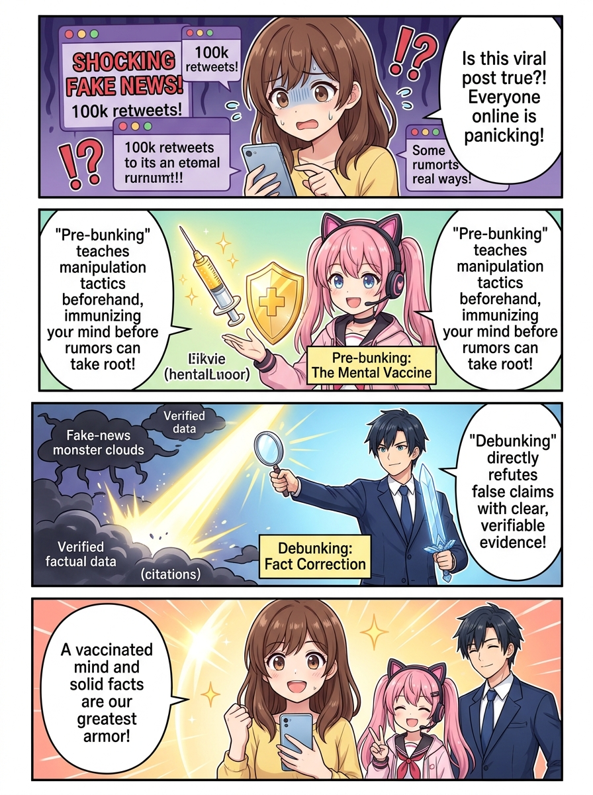
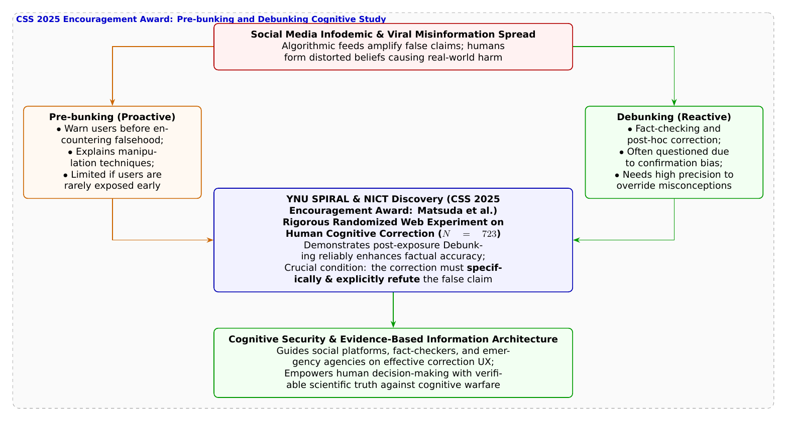

🎨 4コマ漫画挿絵（文字なし）
AI高解像度生成
▲ 【挿絵】青葉台高校 情報科学部＆帝都科学大学サイバーディフェンス・ラボでの実践シーン
💬 4コマ漫画キャラクターセリフ (Story Dialogue Script)
日・英バイリンガル (JA / EN)[蓮]「葵先輩、落ち着いて！ 典型的な不安を煽るフェイクニュース（偽情報）のパターンですよ！」
[Ren] "Aoi, calm down! That's a textbook anxiety-inducing fake news pattern!"
[葵]「でも、一度信じちゃった人を説得するのって、逆に意固地になっちゃって難しいって聞くよ？」
[Aoi] "But isn't it notoriously hard to change someone's mind once they believe a rumor due to confirmation bias?"
[蓮]「しかも単に『デマです』と言うだけでなく、『誤った主張の何をどう明確に否定しているか』という具体性が決定打になるんだね！」
[Ren] "And merely saying 'It's false' isn't enough; explicitly detailing 'what specific claim is refuted and why' is the decisive key!"
[結衣]「0と1のプログラムだけでなく、人の認知（マインド）を偽りの嵐から守ることも、私たちの使命です！」
[Yui] "Defending not just binary bits, but human cognition against the storm of deception, is our ultimate mission!"
📖 小説本文
初冬の寒風が吹き抜ける青葉台高校。放課後の部室に飛び込んできた橘葵は、青ざめた表情でスマートフォンの画面を突き出した。
「み、みんな大変だよ！ SNSで『〇〇市の浄水場に未認可の有害ナノ粒子が混入！ すぐに水道の水を止めてペットボトルの水を買い占めて！』っていう投稿が、すでに5万リポスト以上も拡散されてるの！ 私のクラスのグループチャットでも大騒ぎになってて……私もみんなに早く知らせてあげなきゃ！」
葵が震える指でリポストボタンを押そうとした瞬間、神崎蓮がその手首を優しく押し止めた。
「葵先輩、深呼吸してください！ その動画の出所や、専門機関の発表は確認しましたか？」
「えっ……？ だって、白衣を着た人が顕微鏡の画像を映して深刻そうに話してるし、たくさんの人が『本当だ！』って拡散してるよ？」
白石結衣がそっと葵の肩に手を置き、自室のノートPCを起動した。
「葵先輩、それは人間の恐怖心や『善意で誰かを助けたい』という心理（ソーシャルエンジニアリング）を巧みに突いた、典型的な**偽誤情報（インフォデミック）**の手口です。市の水道局や厚生労働省の公式ページ、主要なニュース機関を検索しても、そのような事実は一切発表されていません」
「え……うそ……。私、善意で嘘を広めちゃうところだったの……？」葵が呆然と呟く。
「落ち込むことはないよ、葵ちゃん」
ドアを開けて入ってきた城崎悠真が、温かい眼差しで葵を見つめた。
「人間は感情を持つ生き物だ。アルゴリズムが刺激的な投稿を優先しておすすめ（レコメンド）に流す現代のSNSでは、どんなに賢い人でも偽の情報を信じ込んでしまうリスクに晒されている。だからこそいま、世界中のサイバーセキュリティ研究において**『認知セキュリティ（Cognitive Security）』**――人間の心と意思決定を情報攻撃からどう守るかが最重要テーマになっているんだ」
「人の心を守るセキュリティ……？」
「そうだ」悠真はホワイトボードに2本の矢印を描いた。
「偽情報に対抗するアプローチには、大きく分けて2つある。 1つ目は、偽情報に触れる前にあらかじめ『こういう騙しの手口があるから注意してね』と予告して心理的なワクチンを打つ**『プレバンキング（Pre-bunking: 事前予防）』**。 2つ目は、偽情報が広まってしまった後に『その情報は誤りであり、正しくはこうです』と事実を突きつける**『デバンキング（Debunking: 事後訂正）』**だ」
蓮が首をかしげながら質問した。
「でも先輩、よく心理学では『バックファイア効果』って言われますよね。一度デマを信じてしまった人に『それは間違いだ』と訂正しても、かえって自分の意見に固執して意固地になってしまい、逆効果になるんじゃないですか？」
「まさにその長年の疑問に対し、大規模な実証実験で科学的な答えを導き出したのが、情報通信研究機構（NICT）と横浜国立大学SPIRALの**松田美慧氏、鈴木悠氏、藤田彬氏、吉岡克成教授、笠間貴弘氏ら**の研究グループなんだ。CSS 2025において**『予防と訂正：人はどうすれば事実を正しく捉えられるのか』**を発表し、見事**CSS奨励賞**を受賞したんだよ」
結衣が論文のグラフをスクリーンに映し出した。
「研究チームは、723名もの一般ユーザーを対象に厳密なランダム化比較実験を行いました。その結果、世間で言われていた懸念に反して、**『デバンキング（事後訂正）は、ユーザーの事実に対する認識を統計的に有意に向上させる』**という明確な結論が得られたのです」
「えっ！ ちゃんと訂正すれば、人は事実を正しく理解し直せるんだ！」葵の瞳に光が戻る。
「そうだ。そしてこの研究の最も重要で実践的な発見は、**『訂正情報（ファクトチェック）の具体性』**にある」と悠真は力説した。
「単に『そのニュースはデマです』と一言否定するだけでは、人々の誤認を解くことはできない。デマの主張が言っている『〇〇という成分が危険』という点に対し、**『具体的に何を、どのような科学的根拠に基づいて明確に否定しているか』**を論理的・具体的に明示して初めて、人々の認知が事実へと正しく修正されることが実証されたんだ」
葵はスマートフォンの画面を開き、市の水道局が先ほど公開したばかりの「具体的な水質検査数値と専門機関の分析結果が明記された公的リリース」を確認した。
「本当だ……！ 『この物質は検出限界以下であり、動画の画像は海外の別実験のものである』って具体的に否定されてる！ これを読めば、みんな安心して冷静になれるね！」
「ええ」結衣が微笑む。「悪意ある偽りの嵐に対して、感情で対抗してはなりません。具体的な検証の光――事実の盾を掲げることこそが、デジタル社会に生きる市民の最大の知性なのです」
「うん！ 私、クラスのみんなにも、この水道局の具体的な公式発表のリンクを教えてあげるね！」
葵の顔にいつもの明るい笑顔が戻った。コンピューターの回路だけでなく、人々の心と社会の絆を守るサイバーセキュリティの深淵な温もりが、部室の全員の胸を静かに満たしていた。
---
📊 セキュリティ構造図解 (TikZ LuaLaTeX生成)
国家安全基準・工学図解
▲ 【技術構造図】IPAデジタルスキル標準・国際規格に準拠した仕組みのモデル化